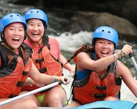

Explore
Nature is inspiring and has a way of helping us feel alive and centered. While getting out and experiencing nature is often an easier endeavor on land than it is on water, there is so much to explore on the water, especially on our beautiful rivers. With the right guides and equipment, navigating rivers including the rapids, is an amazing experience!